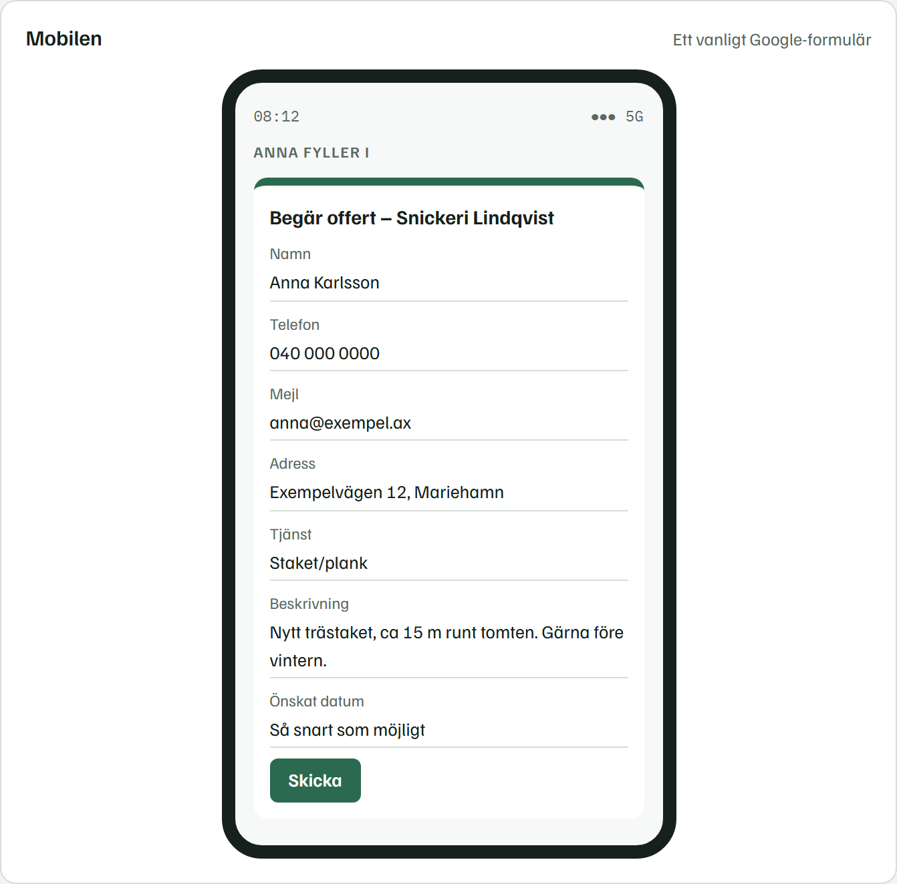
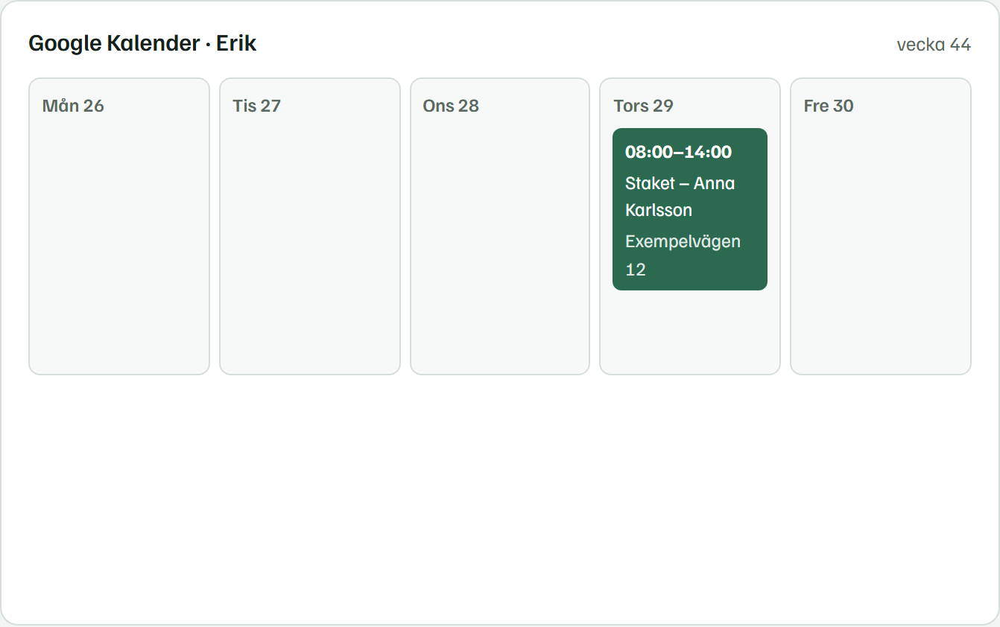
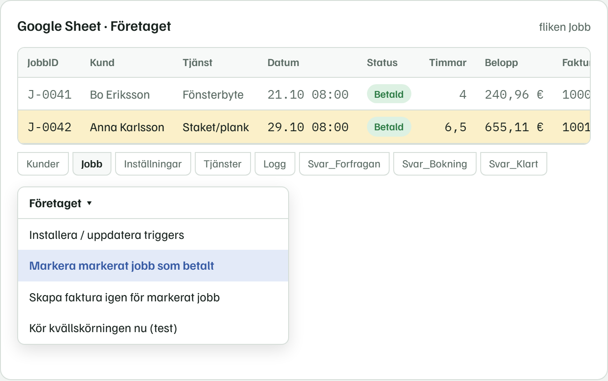
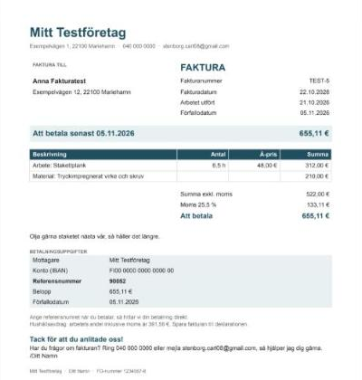

|
Carl Stenborg |
Pappersfritt företag
En digital sekreterare för små hantverkare på Åland. Inget faller mellan stolarna.
En animerad film på en minut som jag gjorde för att visa idén för hantverkare. Erik är påhittad.
Problemet
En snickare eller elektriker får förfrågningar via samtal, SMS, mejl och Facebook. Efter en lång arbetsdag ska allt sorteras, bokas och faktureras, och då glöms saker bort. Jag ringde runt till hantverkare på Åland för att höra hur det ser ut. Alla som svarade på frågorna hade glömt något den senaste månaden. En byggare sa att 60 % av hans tid går till kontorsarbete.
Vad systemet gör
Kunden fyller i ett formulär för att begära offert och får ett svar direkt. Hantverkaren bokar jobbet med en knapp i mobilen, och det hamnar i Google Kalender. Kvällen innan får kunden en påminnelse. När jobbet är klart fyller hantverkaren i timmar och material, och en färdig faktura skapas som PDF. Om kunden inte betalar i tid skickas en vänlig påminnelse.
Allt körs i hantverkarens eget Google-konto, med Gmail, Kalender och Kalkylark som hen redan har. Det finns inget nytt program att lära sig, och hantverkaren äger sina egna data.




Bilderna kommer från en klickbar demo och ett testföretag. Alla namn och nummer är påhittade.
Hur det är byggt
Systemet är skrivet i Google Apps Script, som körs gratis i Googles moln. Formulär, kalender, mejl och fakturamall kopplas ihop med kod som startar av sig själv när ett formulär skickas in, och varje kväll klockan sex. Det som skiljer två kunder åt, till exempel timpris och tjänster, ligger i kalkylarket och inte i koden.
Jag har byggt det tillsammans med AI-verktyget Claude Code. Jag bestämmer vad som ska byggas, testar och styr. Claude Code skriver det mesta av koden.
Så har jag testat det
Ett system som skickar mejl och fakturor till riktiga kunder får inte göra fel. Därför:
- 116 automatiska tester. Jag byggde en låtsasversion av Google så att hela flödet kan testas på några sekunder efter varje ändring.
- Testläge. När det är påslaget går alla mejl bara till mig, aldrig till kunder.
- Ett slutprov på riktigt. Hela kedjan från förfrågan till betald faktura kördes i ett riktigt Google-konto. Tio fel hittades och rättades.
Vad jag lärt mig
När jag pratade med hantverkarna visade det sig att de redan är digitala. Problemet är att allt är utspritt i olika appar och att saker glöms bort. Därför är budskapet att "Inget faller mellan stolarna". Jag har lärt mig att det lönar sig att fråga kunderna innan man bygger, och att ett system som andra ska lita på måste testas mycket.